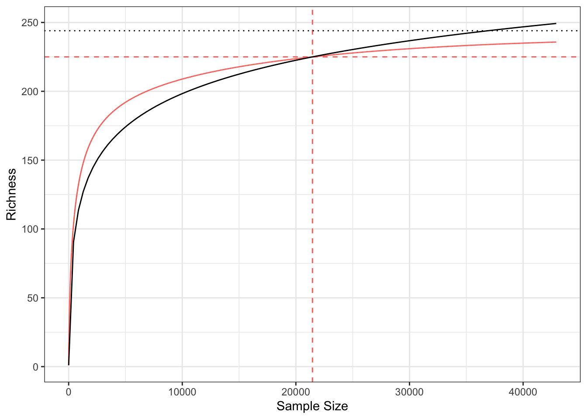
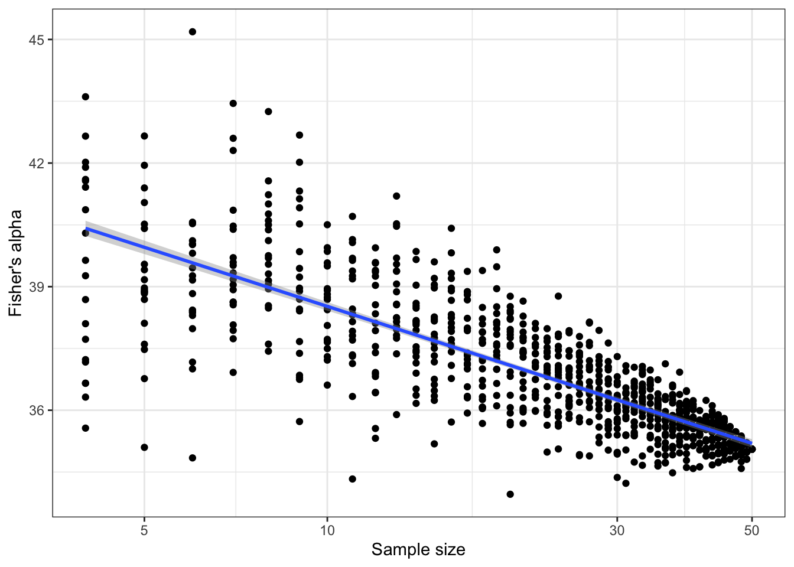
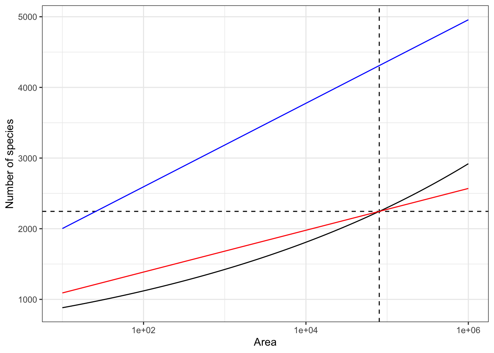
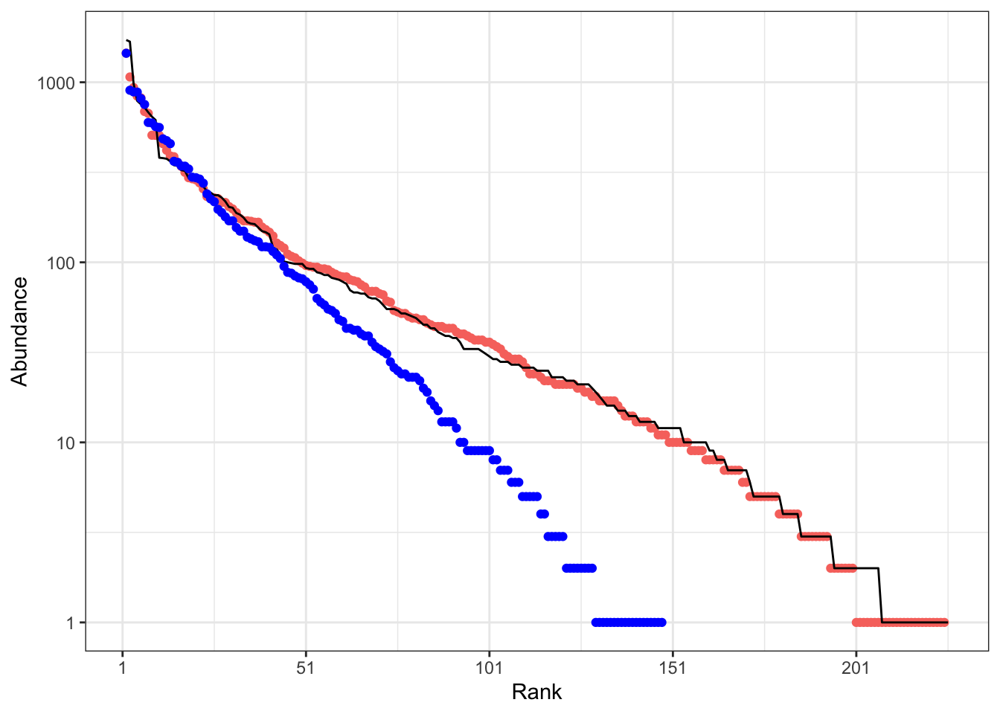
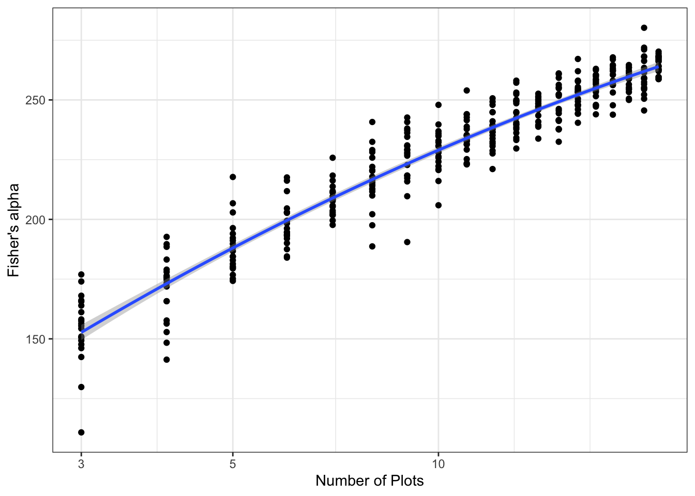

![]()

Fisher’s alpha is generally not a valid metric of biodiversity in tropical forests
Abstract
Fisher’s alpha should not be used to assess the diversity of tropical forest tree species at the local and regional scales. At the local scale, communities are not distributed in log-series: alpha is the parameter of a model that does not fit the data so it can neither be estimated nor interpreted unambiguously. At the regional scale, alpha correctly describes the distribution of a metacommunity whose extent is unknown when it is not the whole forest area. Species richness is always a better diversity metric than alpha, containing basically the same information without relying on uncertain assumptions.
Keywords
Fisher’s alpha, biodiversity, tropical forests
1 Introduction
Tropical evergreen forests such as the Amazon host thousand of tree species that are difficult to assess (Steege et al. 2013). Even though their biodiversity does not reduce to trees, understanding their distribution is a necessary step to both understand the functioning of the ecosystem (Liang et al. 2016) and develop conservation policies (Strange et al. 2024).
The relation between diversity and area has long been questioned by ecologists (MacArthur & Wilson 1967; Plotkin et al. 2000). It must be addressed according to the considered scale (Grilli et al. 2012). At the local scale, i.e. when the distribution of species can be considered as unique, species accumulation curves (SAC) are built from it with well-known statistical tools (Chao et al. 2014; Gotelli & Colwell 2001). At regional scales, i.e. when different communities are included and beta-diversity comes into play, species-area relationships (SAR) properly speaking are derived from ecological theory (Harte et al. 1999) with empirical support (Arrhenius 1921). Whatever the scale, the number species increases with the area or the number of individuals, making it a challenge to correctly describe biodiversity with a number: species richness (i.e. the number of species) is the simplest candidate, but its application may be ambiguous.
Fisher’s log-series (Fisher et al. 1943) was derived originally from a distribution of tropical butterflies. It is formulated as a species-abundance relationship that links the number of species to the number of individuals with a single parameter, called \(\alpha\). Fisher’s \(\alpha\) is thus an ideal candidate to measure diversity since it overcomes the previous issue: it is scale-independent if the actual species distribution is a log-series. After a long period of relative obscurity, \(\alpha\) made a comeback following the development of Hubbell’s neutral theory (Hubbell 2001) since the metacommunity is distributed in log-series whose \(\alpha\) equals \(\theta\), the fundamental number of biodiversity. Although the log-series does not apply to the local scale according to the neutral theory, it became popular (Duque et al. 2017; Ter Steege et al. 2023) to describe the diversity of forest trees, probably for its simplicity. Summarizing a species distribution by a statistics that does not apply to it is questionable. The aim of this paper is to show that \(\alpha\) actually does not measure diversity unambiguously, neither at local nor at regional scales, and should be limited to the largest metacommunity. It is organised as follows: Fisher’s \(\alpha\) fundamentals are first recalled; its use at the different scales is then discussed before concluding about its applicability.
2 Material and methods
2.1 Fisher’s \(\alpha\) fundamentals
Fisher derived the log-series distribution from a set of assumptions (Fisher et al. 1943). In his model, all species are distributed completely randomly and independently from each other, i.e. their abundance in a fixed area follows a Poisson distribution. The intensities of the Poisson distributions of all species follow in turn a gamma distribution with shape parameter (tending to) zero. Last, the number of species is infinite. Then, the number of species with non-zero abundance \(S(n)\) is linked to the size of the community \(n\) through Equation 1 by a parameter named \(\alpha\). It is called log-series because the number of species is derived as the sum of the number of species any number of individuals: this infinite sum appears to be the Taylor series of the logarithm function.
\[ S(n) = \alpha \ln \left( 1 + \frac{n}{\alpha} \right) \tag{1}\]
For \(n \gg \alpha\), Equation 1 can be simplified to \(S(n) \approx -\alpha ln(\alpha) + \alpha ln(n)\), i.e. the number of observed species is linearly related to the logarithm of the sample size. The slope of the line is \(\alpha\) and the intercept is \(-\alpha ln(\alpha)\).
Based on Equation 1, the species accumulation curve has two parts when plotted on a logarithmic x-axis: first, as \(n\) is not great enough for the approximation, it is convex, then it is linear (Figure 1).
The distribution can also be represented as a rank-abundance curve (RAC: Figure 2). \(p_s\) is the probability for an individual to belong to species \(s\) and \(\{\mathbf{p}\} = \{p_1, p_2, \dots, p_s, \dots\}\) is the set of species probabilities. The relative abundance of species \(s\) estimates its probability: \(\hat{p}_s = n_s / n\), so \(\{\mathbf{\hat{p}}\}\), the empirical distribution, is an estimator of \(\{\mathbf{p}\}\), the actual species distribution. The RAC represents the (relative or absolute) abundances of observed species in decreasing order. A characteristic feature of the log-series is that the abundance of species decreases linearly with their rank, except for the most abundant ones. Rarer species are included in the RAC as \(n\) increases.

2.2 Example data
To illustrate the estimation of Fisher’s \(\alpha\) at the local scale, the BCI data set available in the R (R Core Team 2025) package vegan (Oksanen et al. 2025) will be used. It was published by Condit et al. (2002). The data consist of 50 one-hectare plots of tropical evergreen forest where all trees above 10 cm DBH (diameter at breast height) were recorded. The forest is located on Barro Colorado Island in the canal of Panama. It has been studied by many authors (Muller-Landau & Wright 2024), allowing to compare the results of this paper to a large literature, even though the metrics of diversity may vary somehow since the forest was inventoried at different dates, including trees above 1 cm DBH. The BCI dataset used here contains 21457 trees above 10 cm DBH in 225 species.
The regional dataset is a part of the GuyaDiv network (Engel 2015) located in French Guiana, published in Marcon et al. (2024). It contains 68 one-hectare plots located in 21 sites scattered over the territory. They were used to estimate the number of tree species in French Guiana: around 2200 in 80,000 km2 of continuous, tropical evergreen forest on the north-eastern edge of the Amazon.
3 Local scale

Sampling the local community results in a species accumulation curve, studied in depth by Gotelli & Colwell (2001). The number of species increases step by step, when the next sampled individual belongs to a new one. This stochastic collector’s curve is of less interest than its expectation, assuming individuals are sampled independently: only that smoothed curve is called the SAC. It is actually computed by rarefaction of the distribution of the whole sample (Chao et al. 2014). It is usually plotted on continuous scales. Between sample sizes \(n\) and \(n + 1\), the slope of the curve is the probability for the next individual to belong to a new species (Grabchak et al. 2017): it decreases until all species have been discovered, so it is concave.
Figure 3 shows the SAC of the Barro Colorado Island 50-ha forest plot. The number of species increases with sample size and does not reach an asymptote despite the huge sampling effort. To allow comparing diversity with other sites, two strategies are possible: estimating asymptotic diversity or standardizing the sampling effort (Chao & Jost 2012).
The asymptotic diversity is the number of species that would be observed if the sample reached the necessary size to encompass all species of the community : it equals 244 according to the jackknife estimator (Burnham & Overton 1978). In hyperdiverse ecosystems such as evergreen forests, the asymptotic community generally does not exist in the field because of environmental variations: increasing the size of the sample results in sampling in different communities. Thus, the asymptotic estimators of diversity correspond to theoretical asymptotic communities that do not necessarily exist: it is a feature of a model. This may be an argument for avoiding them, but the definition of the local community is already a model (Stroud et al. 2015), in the sense that local environmental variations imply that the distribution of species varies in turn: the neglected heterogeneity of what is defined as the local community corresponds to necessary decisions to model the reality.
The alternative consists in standardizing the sample size, in general to allow comparing different communities whose inventories are not large enough to allow a reliable estimation of asymptotic diversity. Exact rarefaction formulas are available to calculate the number of tree species at any sampling level smaller than the actual sample, and estimators allow extrapolating the diversity up to a limited level, around twice the actual sample size (Chao et al. 2014). The expected number of species in one hectare of BCI, actually based on the average number of trees per hectare (equal to 429), is 103. This result can be compared easily to well-known benchmarks, such as the 367 species inventoried in one hectare of an Amazonian Ecuador forest (Valencia et al. 1994), even though a larger area would be preferable to better take into account the rare species and leave the steepest part of the SAC in Figure 3.
In contrast, Fisher’s \(\alpha\) does not depend on the sample size as soon as \(n \gg \alpha\), which is always true in forest inventories. Thus, it appears to be an ideal, universal metric of biodiversity, allowing to compare it across sites of different sizes. The issue is that the distribution of tropical forest tree communities is not a log-series. Hubbell (2001) named it the zero-sum multinomial distribution; its mathematical derivation is due to Volkov et al. (2003). It is close to a log-normal distribution (McGill 2003), but differs from by a greater abundance of the rarest species. This discrepancy has two consequences: from a theoretical point of view, \(\alpha\) is the parameter of a distribution that is not observed; from an empirical point of view, its estimation is inconsistent.
The theoretical issue does not require much more argumentation. Applying an inappropriate model to describe the distribution of species is similar to trying to describe the size of a rectangle by its length, assuming it is a square.
The empirical question deserves further elaboration because it is always possible to estimate \(\alpha\) from the data and implicitly assume log-series distributions. A basic argument is that the actual distribution is not so different from a log-series that the advantages of summarizing it by \(\alpha\) are worth accepting the approximation. In an important article, Ter Steege et al. (2023) study the \(\alpha\) diversity of tree species across the Amazon, defined as “Fisher’s alpha of a tree-inventory plot”. Historically, Whittaker (1960) named the average local diversity after Fisher’s \(\alpha\), but his metric was species richness. Ter Steege et al. (2023) revert the reference, declaring Fisher’s \(\alpha\) the standard measure of \(\alpha\) diversity. This shortcut must be discussed in depth.
Several R packages allow estimating \(\alpha\) from a vector of abundances (see Appendix Section 7.1 for details). Most of them (such as vegan::fisher.alpha) just solve Equation 1, i.e. they only rely on the total abundance and number of species, ignoring the distribution. This estimator will be denoted \(\hat\alpha(n, S)\): it corresponds to the intersection between the SACs of a log-series and of the data (Figure 3). Often, the sample size is an area \(A\), so the estimator is rather \(\hat\alpha(n(A), S)\) where the number of individuals depends on the area. More elaborate functions (such as sads::fitls) find the value of \(\alpha\) that maximizes the likelihood of the distribution assuming it is a log-series. That estimator will be denoted \(\hat\alpha_{MLE}(\{\mathbf{\hat{p}}\})\). A new estimator based on goodness of fit instead of likelihood maximization is proposed in Appendix Section 7.1: \(\hat\alpha_{gof}(\{\mathbf{\hat{p}}\})\).
When applied to the BCI dataset, both \(\hat\alpha(n, S)\) and \(\hat\alpha_{MLE}(\{\mathbf{\hat{p}}\})\) return the same estimation: 35. Its poor empirical fit is illustrated by Figure 3 and Figure 1. \(\hat\alpha_{gof}(\{\mathbf{\hat{p}}\})\) better takes into account the rarer species (Appendix Figure 6). It equals 42.

In contrast with the assumed advantage of \(\alpha\), its estimate \(\hat\alpha(n, S)\) heavily relies on the sample size. Figure 4 shows the average estimation of \(\alpha\) based on random subsamples of BCI, from 4 to 50ha, repeated 20 times. The estimated value of \(\alpha\) decreases from over 40 to approximately 35, with a quite good linear relation between \(\alpha\) and the logarithm of the sample size. Several studies can be found in the literature, e.g. Duque et al. (2017) and Schulte et al. (2005), where the dependence of \(\alpha\) to sample size is explored either with a statistical or an ecological approach. Actually, according to the definition of the SAC that reaches an asymptote, \(\hat\alpha(n, S) \to 0\) when \(n \to \infty\). At this stage, there is no real argument to decide whether BCI’s \(\alpha\) is 35 or 40, or even its asymptotic estimate equal to 0. The best choice is probably to consider that it is simply not defined.
A degraded utilization of \(\alpha\), more precisely \(\hat\alpha(n, S)\), would be legitimate if it allowed ordering communities (Tothmeresz 1995), even though it does not qualify a log-series distribution. If the sample size \(n\) is fixed, then a bijective relation exists between the estimate of \(\alpha\) and the number of species \(S\), i.e. standardised richness. In this case, \(\hat\alpha(n, S)\) is a valid, although uselessly complicated, index of diversity. But when the sampling effort is an area, \(n\) varies. Everything else equal, \(S\) increases with \(n\) : this defines the SAC. The consequence of different tree density is thus unpredictable, since \(\hat\alpha(n, S)\) is an increasing function of \(S\) but a decreasing function of \(n\). In a log-series distribution, \(S\) and \(n\) neutralise each other so that \(\alpha\) is constant, but other distributions entangle their effects. Two communities with the same species distributions, whose diversites are by definition equal (Patil & Taillie 1982), may be ordered differently if their densities vary.
A workaround for these problems is assuming that the local community is a sample of the metacommunity, following the neutral theory. It is not a log-series only because of dispersal limitation, i.e. its migration parameter \(m\) is not 1. Then, the parameter to estimate is \(\theta\), the fundamental number of biodiversity in the metacommunity BCI belongs to. Increasing the sample size does not lead to reach the asymptotic, local diversity but (because the modelling choice is different) makes the distribution converge to that of the metacommunity: \(\hat\alpha(\{\mathbf{\hat{p}\}}) \to \hat\alpha(\{\mathbf{p}\}) = \theta\) when \(n \to \infty\). This is an elegant solution both theoretically (all assumptions are valid) and empirically (the estimation of \(\theta\) is unbiased).
Hubbell (2001) [page 293] proposed estimating \(\theta\) by adjusting the rank-abundance curve to the most frequent species in the community, arguing that these species are also the most abundant in the metacommunity. He found \(\theta = 50\). The same algorithm is applied to the current BCI dataset in Appendix Section 7.2: its result is \(\theta = 45\). More robustly, both \(\theta\) and \(m\) can be estimated by likelihood maximization of the local distribution (Etienne 2005) with the untb package (Hankin 2007). The retained value of \(\theta\) is 48. The consistency of this approach is shown in Appendix Section 7.3: \(\theta\) and \(m\) are estimated from the BCI distribution, then a community of the same size is drawn with these parameters: it is very close to the actual distribution.
This approach faces two limits. As far as we know, it is not applied in the literature: the metric of Ter Steege et al. (2023) is \(\hat\alpha(n(1\ \mathrm{ha}), S)\), not \(\theta\). More importantly, it does not describe the diversity of the local community but that of the metacommunity: summarizing BCI by \(\theta = 48\) ignores the migration parameter. Modifying \(m\) yields very different distributions, from geometric to log-series (Hubbell 2001). In other words, \(\theta\) only gives a very partial knowledge of the diversity of the local community.
4 Regional scale
The regional scale is that of Arrhenius’s model (Arrhenius 1921). Its fundamental difference with the local scale is that several communities are taken into account, involving \(\beta\) diversity that can’t be addressed directly. Whereas the computation of the local species accumulation curve was non-parametric, based solely on statistical techniques, the regional species-area relationship follows a power model with parameters \(c\) and \(z\) ,
\[ S(A) =c A^z, \tag{2}\]
where \(A\) is the surface area, \(c\) a constant that depends on the organisms taken into account and the regional diversity, and \(z\) the parameter that relates richness to area. Assuming that forest communities are saturated (Hubbell 2001), i.e. \(n = \rho A\) where \(\rho\) is the number of trees per unit area, the number of individuals is proportional to the area, and, since \(\ln n \gg \ln \rho\), the model can be rewritten in a linear form:
\[ \ln\left(S\left(n\right)\right) = k_A + z \ln\left(n\right) \tag{3}\]
where \(k_A\) is another constant.
The regional scale is also that of the metacommunity in the neutral model. The actual size \(J_m\) of the metacommunity a local community results from is difficult to address and of little interest in the theory since the important parameter is \(\theta\), that combines both \(J_m\) and the speciation rate \(\nu\). The important fact here is that, according to the neutral model, metacommunities are distributed in log-series whose \(\alpha\) parameter asymptotically tends to \(\theta\) when their size increases (Hubbell 2001).
Sampling the metacommunity by a large enough number of plots results in a log-series distribution. This property allowed estimating the number of species of the Amazon forest (Steege et al. 2013) and of all tropical forests of the world (Slik et al. 2015). Discussing the sampling issues due to the spatial structure of species (Steege et al. 2020) or the discrepancies between the empirical and theoretical distributions (Milton & Ostling 2025) is not the scope of this paper: even ignoring them, the theory is very well supported empirically.
Gleason (1922) refuted Arrhenius’s model, arguing that the richness would be far too high for large areas, and proposed a competing model in which the number of species, rather than its logarithm, increased with the logarithm of the area. Assuming saturation, it can be rewritten as
\[ S\left(n\right) = k_G + \alpha \ln\left(n\right), \tag{4}\]
where \(k_G\) is yet another constant and \(\alpha\) the slope of the relation. This model is actually identical to Fisher’s (Engen 1977).
Arrhenius’s model benefits from a long theoretical (Harte et al. 1999; Preston 1962; Williamson et al. 2001) and empirical (Dengler 2009; Triantis et al. 2012) support. A simple argument against Gleason’s model is contained in the neutral theory. Consider a large metacommunity and assume it is distributed as a log-series. A smaller metacommunity inside it would just be a sample of it in absence of dispersal limitation. Then both distributions would be identical, i.e. the same log-series with the same parameter \(\alpha\): the same Fisher’s model would be valid for all subsamples of the largest metacommunity, validating Gleason’s model. Yet, dispersal is limited, i.e. not all species of the largest metacommunity are present in the smaller ones: their diversity is reduced. Although they are distributed in log-series, their parameter \(\alpha\) is smaller. Thus, the number of species decreases faster with the area than predicted by Gleason’s model, inverting his original argument.
At this stage, we face an apparent paradox: the regional species-area relationship follows a power model but a metacommunity is distributed in log-series. It is solved considering that the metacommunity’s \(\alpha\) parameter depends on its size. Again, a smaller metacommunity embedded in the first one does not contain all species because of dispersal limitation.
When the SAR is plotted on a log-log scale, it is linear (Equation 3). If the y-axis is not in logarithmic scale, it becomes convex. In this representation (Figure 5), a log-series species accumulation curve is a straight line (the number of individuals is much greater than \(\alpha\)). This theoretical result can be verified empirically with the GuyaDiv network plots in French Guiana (Appendix Section 7.4): \(\alpha\) increases with the number of sites included in the sample.

The metacommunity GuyaDiv is a sample of largely exceeds the borders of French Guiana. Its estimated \(\alpha\) equals 257, implying more than 4000 tree species in the territory based on the number of trees: 627 per hectare on average multiplied by 8 million hectares. Its SAC is shown in Figure 5. The actual number of species in French Guiana was obtained by the estimation of the power model (Marcon et al. 2024): it is close to 2200. The correct estimate of \(\alpha\) is thus only 128.
This example illustrates the impossibility to estimate \(\alpha\) at a regional scale from sample plots, e.g. to compare the diversity of adjacent regions. Log-series can be sampled, but the size of the metacommunities can’t be controlled. Of course, this issue vanishes when the metacommunity under study is bounded, e.g. the Amazon sampled by Steege et al. (2013) to estimate its total number of species. In this case, adding samples necessarily leads to an asymptotic estimation of \(\alpha\).
5 Conclusion
Despite its popularity as an index of diversity, Fisher’s \(\alpha\) should not be applied to tropical forest communities because it is the parameter of a model that does not fit the data. According to the neutral theory, log-series communities would result from migration parameter 1, i.e. in the absence of dispersal limitation of the species of the metacommunity, which never occurs. Forcing the estimation of \(\alpha\) in non-log-series distributions results in highly scale-dependent values that seriously question the comparisons between communities based on their \(\alpha\) index.
At the regional scale, metacommunities do follow log-series distributions so \(\alpha\) can be estimated from a set of scattered forest plots, even though the spatial structure of species may introduce estimation biases. Even ignoring this issue, \(\alpha\) can’t be interpreted simply because it is not possible to characterize the area of the sampled metacommunity. At this scale, the measure is correct, but the measured object is unclear.
Finally, the empirical interest of Fisher’s \(\alpha\) is limited to the distribution of clearly delimited metacommunities, such as the Amazon forest as a whole. In this context, it allowed among other results to estimate the number of tree species.
In contrast, species richness can be unambiguously defined and estimated at all scales. At the local scale, given the number of individuals, it contains the same information as \(\alpha\) without assuming any particular distribution. It can be completed with other diversity metrics, namely Hill numbers (Marcon et al. 2014). At the regional scale, with much more efforts, the number of species can be derived from Arrhenius’s power model with appropriate sampling (Marcon et al. 2024).
6 Acknowledgement
The author thanks Jérôme Chave for discussions that motivated writing this article to explicit our disagreement about utilizing Fisher’s \(\alpha\) as a diversity metric.
7 Appendix
7.1 Estimating \(\alpha\) with R
Point estimation
Most implementations of the calculation of \(\alpha\) are limited to solving the equation
\[S(n) = \alpha \ln \left( 1 + \frac{n}{\alpha} \right),\]
where \(S(n)\) is the number of species observed in a sample of size \(n\). The only data required are the total number of species and the sample size. The fifty hectares of BCI are used in the examples below.
Functions are:
vegan::fisher.alpha()that relies onvegan::fisherfit(). The numerical resolution usesuniroot().
library("vegan")
fisher.alpha(BCI_50ha)[1] 35.05477fisherfit(BCI_50ha)
Fisher log series model
No. of species: 225
Fisher alpha: 35.05477 untb::fishers.alpha(), identical tovegan::fisherfit()
library("untb")
fishers.alpha(N = sum(BCI_50ha), S = sum(BCI_50ha > 0))[1] 35.05477Likelihood maximisation
The alternative is to adjust the observed abundance distribution to the theoretical distribution of a log series, maximising its likelihood as a function of \(\alpha\).
This is done by sads::fitls() which uses mle2() to maximise the likelihood of sads::dls() (the probability density of the log-series). The default starting value is the point estimate.
library("sads")
fitls(BCI_50ha) %>%
coef() N alpha
21457.00000 35.05477 In the case of BCI, the result is the same: the likelihood calculation gives predominant weight to the most abundant species.
Goodness of fit
The theoretical rank of a species \(r_s\) can be calculated from its abundance \(n_s\) (May 1975) with the following function lseries_RAC:
\[r_s = \alpha \int_{n_s \ln(1 + \alpha / n)}^\infty{\frac{e^{-t}}{t} dt}\]
It is a real value, not an integer.
#' Theoretical rank of abundances
#'
#' @param abd a vector of abundances
#' @param alpha Fisher's alpha of the distribution
#'
#' @returns a vector of ranks
lseries_RAC <- function(abd, alpha) {
n <- sum(abd)
rank <- vapply(
# Calculate the rank of each species
abd,
FUN = function(n_s) {
# Calculate the integral
f <- stats::integrate(
function(t) {exp(-t) / t},
lower = n_s * log(1 + alpha / n),
upper = Inf
)
# Multiply it by alpha
alpha * f[["value"]]
},
FUN.VALUE = 0
)
# Return the RAC as a tibble
tibble::tibble(rank, abundance = abd) |>
dplyr::arrange(rank)
}The best-fit value of \(\alpha\) can be found by minimizing the sum of the absolute differences between theoretical and observed ranks.
#' Fit alpha by minimizing the departure of species
#' ranks from their theoretical value in a log-series
#' @param abd a vector of abundances
#'
#' @returns the best-fit value of of Fisher's alpha
fit_alpha <- function(abd) {
abd_decr <- sort(abd[abd > 0], decreasing = TRUE)
optimized <- stats::optim(
par = vegan::fisher.alpha(abd),
fn = function(alpha) {
sum(abs(seq_along(abd_decr)
- lseries_RAC(abd_decr, alpha)$rank))
},
method = "L-BFGS-B",
lower = 0
)
optimized$par
}Applied to BCI, the estimate of \(\alpha\) is 42.

7.2 Estimating \(\theta\) by the abundant species distribution
Hubbell (2001) proposes estimating \(\theta\) by adjusting the rank-abundance curve to the most frequent species in the community, arguing that these species are also the most abundant in the metacommunity.
BCI_50ha %>%
sort(decreasing = TRUE) %>%
subset(. > median(.)) ->
BCI_abundant
BCI_theta <- fit_alpha(BCI_abundant)
library("divent")
BCI_abundant %>%
as_abundances() %>%
autoplot() +
geom_line(
data = lseries_RAC(BCI_50ha, alpha = BCI_theta),
aes(x = rank, y = abundance)
) ->
fig_hubbell_alpha
The estimate using Hubbell’s method is 45. The good fit of this estimation is shown on Figure 7.
7.3 Full simulation
The objective is to close the loop: using the parameters obtained from the BCI data, simulate a metacommunity and then a community of the same size as BCI. To validate the approach, the simulated distribution should be similar to the actual one.
BCI parameters \(\theta\) and \(m\) are estimated following Etienne (2005) with the untb package.
library("untb")
if (file.exists("data/BCI_logkda.RData")) {
# Use the saved result if available to save
# computation resources
load("data/BCI_logkda.RData")
} else {
BCI_50ha %>%
# name conflict with dplyr::count()
untb::count() %>%
# requires pari/gp installed and in the search paths,
# or use gp_binary argument
logkda() ->
BCI_logkda
# Save the result
save(BCI_logkda, file = "data/BCI_logkda.RData")
}
BCI_50ha %>%
# name conflict with dplyr::count()
untb::count() %>%
# Estimate theta and m
optimal.params(log.kda = BCI_logkda) %>%
print() ->
BCI_params theta m
47.6001882 0.0926531 A metacommunity with \(J_m = 10^6\) (arbitrary) and \(\theta\) derived from BCI data is simulated.
J_m <- 1E6
theta <- BCI_params[1]
library("divent")
the_metacommunity <- rcommunity(
1,
size = J_m ,
distribution = "lseries",
fisher_alpha = theta
)The distribution of the local community is derived. \(J\) is that of BCI and \(m\) was estimated previously, compared to an arbitrary value of \(m\).
J <- sum(BCI)
m <- BCI_params[2]
library("sads")
# Number of species in the local community
Svolkov(theta, m, J) %>%
# Must be integers for the simulation
round() %>%
# Draw the species abundances
rvolkov(theta, m, J) %>%
# Make it an abundances object top plot it
as_abundances() %>%
# Whittaker plot
autoplot() ->
BCI_sim_neutral
# BCI real distribution
BCI_50ha %>%
sort(decreasing = TRUE) %>%
as_tibble() %>%
mutate(rank = seq_len(n())) ->
BCI_tbl_50ha
# Compare with m = 1%
m_arbitrary <- .01
Svolkov(theta, m_arbitrary, J) %>%
# Must be integers for the simulation
round() %>%
# Draw the species abundances
rvolkov(theta, m, J) %>%
sort(decreasing = TRUE) %>%
as_tibble() %>%
mutate(rank = seq_len(n())) ->
BCI_tbl_m001
# Plot altogether
BCI_sim_neutral +
geom_line(
data = BCI_tbl_50ha,
aes(x = rank, y = value)
) +
geom_point(
data = BCI_tbl_m001,
aes(x = rank, y = value),
color = "blue"
) ->
fig_bci_sim
Figure 8 shows that the simulated community is very similar to the real one but that modifying the migration parameter results in a very different distribution: \(\theta\) alone does not give much information on the local community.
7.4 Increasing regional sampling
An increasing number of GuyaDiv plots (one per site) is randomly selected to sample the metacommunity. The estimated \(\alpha\) is plotted against the number of plots (Figure 9). It increases with the logarithm of the number of plots that is a proxy of the size of the sampled metacommunity.
# Function to randomly select a plot in each of a
# chosen number of sites (sample_size),
# merge the plots and return alpha.
guyadiv_sub_alpha <- function(sample_size) {
# Select one plot per location...
guyadiv_plots %>%
# Set a random value to each plot
mutate(random = runif(n())) %>%
# Save the tibble
{. ->> plots_randomized} %>%
# Select the plot with the max random value
# in each location
group_by(Location) %>%
summarize(random_max = max(random)) %>%
rename(random = random_max) %>%
# Eliminate non-selected plots
inner_join(plots_randomized) %>%
# Keep the plot number and the random number
dplyr::select(Plot, random) %>%
# Get the abundances
inner_join(guyadiv_abd) %>%
# Sort by random number
arrange(random) %>%
# Keep the first rows
head(sample_size) %>%
# Delete the random numbers
dplyr::select(-random) %>%
# Make the table an abundance object (divent)
rename(site = Plot) %>%
as_abundances() %>%
# Give all plots equal weight
mutate(weight = 1) %>%
# Merge the inventories
metacommunity() %>%
# Extract a numeric vector
as.numeric() %>%
# Compute alpha
fisher.alpha()
}
# Count the number of sites
guyadiv_plots %>%
group_by(Location) %>%
summarize() %>%
nrow() ->
sites_n
# Choose sizes between 3 and the number of sites
sizes <- seq_len(sites_n)[-(1:2)]
# Calculate alpha of each sample
alphas <- replicate(
simulations_n,
expr = sapply(sizes, FUN = guyadiv_sub_alpha)
)
tibble(NbPlots = sizes) %>%
bind_cols(alphas) %>%
pivot_longer(cols = !NbPlots) %>%
ggplot(aes(x = NbPlots, y = value)) +
geom_point() +
scale_x_log10() +
labs(x = "Number of Plots", y = "Fisher's alpha") +
stat_smooth(method = "lm", formula = y ~ poly(x, 2)) ->
fig_guyadiv_alpha
References
Arrhenius, O. (1921). Species and area. Journal of Ecology, 9, 95–99.
Burnham, K.P. & Overton, W.S. (1978). Estimation of the size of a closed population when capture probabilities vary among animals. Biometrika, 65, 625–633.
Chao, A., Gotelli, N.J., Hsieh, T.C., Sander, E.L., Ma, K.H., Colwell, R.K., et al. (2014). Rarefaction and extrapolation with hill numbers: A framework for sampling and estimation in species diversity studies. Ecological Monographs, 84, 45–67.
Chao, A. & Jost, L. (2012). Coverage-based rarefaction and extrapolation: Standardizing samples by completeness rather than size. Ecology, 93, 2533–2547.
Condit, R., Pitman, N., Leigh, E.G.J., Chave, J., Terborgh, J., Foster, R.B., et al. (2002). Beta-diversity in tropical forest trees. Science, 295, 666–669.
Dengler, J. (2009). Which function describes the species-area relationship best? A review and empirical evaluation. Journal of Biogeography, 36, 728–744.
Duque, A., Muller-Landau, H.C., Valencia, R., Cardenas, D., Davies, S., De Oliveira, A., et al. (2017). Insights into regional patterns of amazonian forest structure, diversity, and dominance from three large terra-firme forest dynamics plots. Biodiversity and Conservation, 26, 669–686.
Engel, J. (2015). Plot networks & teams. ATDN tree morphospecies website.
Engen, S. (1977). Exponential and logarithmic species-area curves. The American Naturalist, 111, 591–594.
Etienne, R.S. (2005). A new sampling formula for neutral biodiversity. Ecology Letters, 8, 253–260.
Fisher, R.A., Corbet, A.S. & Williams, C.B. (1943). The relation between the number of species and the number of individuals in a random sample of an animal population. Journal of Animal Ecology, 12, 42–58.
Gleason, H.A. (1922). On the relation between species and area. Ecology, 3, 158–162.
Gotelli, N.J. & Colwell, R.K. (2001). Quantifying biodiversity: Procedures and pitfalls in the measurement and comparison of species richness. Ecology Letters, 4, 379–391.
Grabchak, M., Marcon, E., Lang, G. & Zhang, Z. (2017). The generalized simpson’s entropy is a measure of biodiversity. Plos One, 12, e0173305.
Grilli, J., Azaele, S., Banavar, J.R. & Maritan, A. (2012). Spatial aggregation and the species-area relationship across scales. Journal of Theoretical Biology, 313, 87–97.
Hankin, R.K.S. (2007). Introducing untb, an r package for simulating ecological drift under the unified neutral theory of biodiversity. Journal of Statistical Software, 22, 1–15.
Harte, J., Kinzig, A. & Green, J. (1999). Self-similarity in the distribution and abundance of species. Science, 284, 334–336.
Hubbell, S.P. (2001). The unified neutral theory of biodiversity and biogeography. Princeton University Press.
Liang, J., Crowther, T.W., Picard, N., Wiser, S., Zhou, M., Alberti, G., et al. (2016). Positive biodiversity-productivity relationship predominant in global forests. Science, 354, aaf8957.
MacArthur, R.H. & Wilson, E.O. (1967). The theory of island biogeography. Monographs in population biology. Princeton University Press.
Marcon, E., Mirabel, A., Molino, J.-F. & Sabatier, D. (2024). Estimation of the number of tree species in french guiana by extrapolation of permanent plots richness. Journal of Tropical Ecology, 40, e11.
Marcon, E., Scotti, I., Hérault, B., Rossi, V. & Lang, G. (2014). Generalization of the partitioning of shannon diversity. Plos One, 9, e90289.
May, R.M. (1975). Patterns of species abundance and diversity. In: Ecology and evolution of communities (eds. Cody, M.L. & Diamond, J.M.). Harvard University Press, pp. 81–120.
McGill, B.J. (2003). A test of the unified neutral theory of biodiversity. Nature, 422, 881–885.
Milton, T.F. & Ostling, A. (2025). Amazonian hyperdominance exceeds expectations of neutral theory. Journal of Ecology, 1365–2745.70174.
Muller-Landau, H.C. & Wright, S.J. (2024). The first 100 years of research on barro colorado: Plant and ecosystem science (volumes 1 and 2). Smithsonian Institution Scholarly Press.
Oksanen, J., Simpson, G.L., Blanchet, F.G., Kindt, R., Legendre, P., Minchin, P.R., et al. (2025). Vegan: Community ecology package.
Patil, G.P. & Taillie, C. (1982). Diversity as a concept and its measurement. Journal of the American Statistical Association, 77, 548–561.
Plotkin, J.B., Potts, M.D., Leslie, N., Manokaran, N., LaFrankie, J.V. & Ashton, P.S. (2000). Species-area curves, spatial aggregation, and habitat specialization in tropical forests. Journal of Theoretical Biology, 207, 81–99.
Preston, F.W. (1962). The canonical distribution of commonness and rarity: Part i. Ecology, 43, 185–215.
R Core Team. (2025). R: A language and environment for statistical computing. R Foundation for Statistical Computing.
Schulte, R.P.O., Lantinga, E.A. & Hawkins, M.J. (2005). A new family of fisher-curves estimates fisher’s alpha more accurately. Journal of Theoretical Biology, 232, 305–313.
Slik, J.W.F., Arroyo-Rodríguez, V., Aiba, S.-I., Alvarez-Loayza, P., Alves, L.F., Ashton, P.S., et al. (2015). An estimate of the number of tropical tree species. Proceedings of the National Academy of Sciences of the United States of America, 112, 7472–7477.
Steege, H. ter, Pitman, N.C.A., Sabatier, D., Baraloto, C., Salomão, R.P., Guevara, J.E., et al. (2013). Hyperdominance in the amazonian tree flora. Science, 342, 1243092.
Steege, H. ter, Prado, P.I., Lima, R.A.F. de, Pos, E., Souza Coelho, L. de, Andrade Lima Filho, D. de, et al. (2020). Biased-corrected richness estimates for the amazonian tree flora. Scientific Reports, 10, 10130.
Strange, N., Ermgassen, S.Z., Marshall, E., Bull, J.W. & Jacobsen, J.B. (2024). Why it matters how biodiversity is measured in environmental valuation studies compared to conservation science. Biological Conservation, 292, 110546.
Stroud, J.T., Bush, M.R., Ladd, M.C., Nowicki, R.J., Shantz, A.A. & Sweatman, J. (2015). Is a community still a community? Reviewing definitions of key terms in community ecology. Ecology and Evolution, 5, 4757–4765.
Ter Steege, H., Pitman, N.C.A., Do Amaral, I.L., De Souza Coelho, L., De Almeida Matos, F.D., De Andrade Lima Filho, D., et al. (2023). Mapping density, diversity and species-richness of the amazon tree flora. Communications Biology, 6, 1130.
Tothmeresz, B. (1995). Comparison of different methods for diversity ordering. Journal of Vegetation Science, 6, 283–290.
Triantis, K.A., Guilhaumon, F. & Whittaker, R.J. (2012). The island species-area relationship: Biology and statistics. Journal of Biogeography, 39, 215–231.
Valencia, R., Balslev, H. & Paz Y Miño C, G. (1994). High tree alpha-diversity in amazonian ecuador. Biodiversity and Conservation, 3, 21–28.
Volkov, I., Banavar, J.R., Hubbell, S.P. & Maritan, A. (2003). Neutral theory and relative species abundance in ecology. Nature, 424, 1035–1037.
Whittaker, R.H. (1960). Vegetation of the siskiyou mountains, oregon and california. Ecological Monographs, 30, 279–338.
Williamson, M., Gaston, K.J. & Lonsdale, W.M. (2001). The species-area relationship does not have an asymptote! Journal of Biogeography, 28, 827–830.